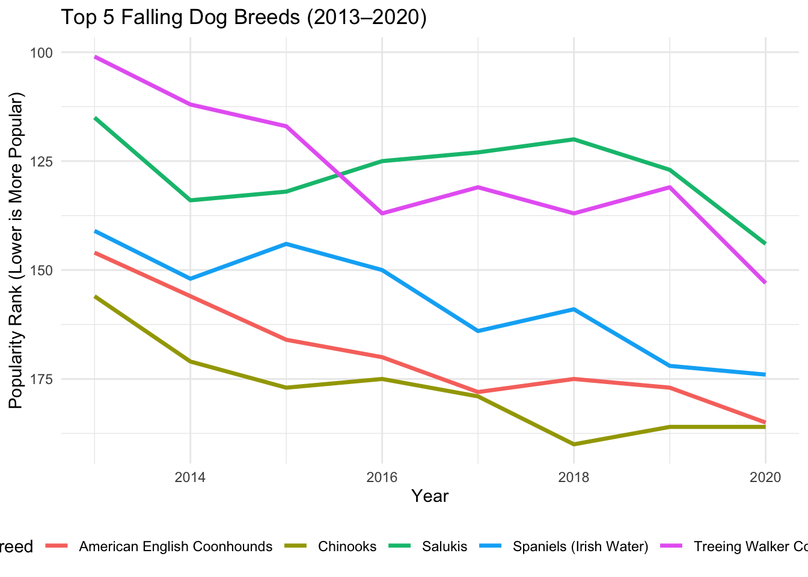
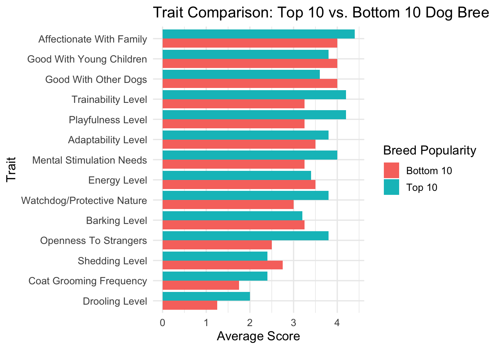

# A tibble: 6 × 17
Breed Affectionate With Fa…¹ Good With Young Chil…² `Good With Other Dogs`
<chr> <dbl> <dbl> <dbl>
1 Retrieve… 5 5 5
2 French B… 5 5 4
3 German S… 5 5 3
4 Retrieve… 5 5 5
5 Bulldogs 4 3 3
6 Poodles 5 5 3
# ℹ abbreviated names: ¹`Affectionate With Family`, ²`Good With Young Children`
# ℹ 13 more variables: `Shedding Level` <dbl>, `Coat Grooming Frequency` <dbl>,
# `Drooling Level` <dbl>, `Coat Type` <chr>, `Coat Length` <chr>,
# `Openness To Strangers` <dbl>, `Playfulness Level` <dbl>,
# `Watchdog/Protective Nature` <dbl>, `Adaptability Level` <dbl>,
# `Trainability Level` <dbl>, `Energy Level` <dbl>, `Barking Level` <dbl>,
# `Mental Stimulation Needs` <dbl>My Puppy - What Makes a Dog Popular?
1 Motivation
In a world where dogs are considered not just pets but beloved family members, understanding what drives the popularity of certain breeds offers a unique lens into broader societal trends. This project began with a simple question: Why do some dog breeds surge in popularity while others quietly fade from the spotlight? As dog ownership continues to rise across the U.S.—particularly among millennials and Gen Z—shifting breed preferences reflect larger lifestyle changes, including increased urban living, smaller households, and a growing emphasis on emotional well-being.
Beyond curiosity, this project has real-world relevance. For pet industry professionals, breeders, shelters, and prospective dog owners, identifying the traits linked to breed popularity can inform smarter decisions, from breeding strategies to adoption campaigns. Culturally, it invites us to consider how our evolving relationships with animals mirror the ways our lives and values are changing.
2 Research Question
- Which dog breeds are gaining or losing popularity over time, and why?
- Are there consistent behavioral or physical traits that correlate with these popularity trends?
- Can we use machine learning techniques (like K-means clustering) to group breeds by traits and uncover latent categories of dog types that appeal to different segments of the population?
- At its core, the project seeks to reveal patterns in how Americans relate to dogs—and how that relationship is shifting over time.
3 Background
To fully appreciate the insights from this analysis, the audience should understand a few key concepts:
- Dog Breed Rankings: Every year, the American Kennel Club (AKC) publishes breed popularity rankings based on registration data. A lower rank means higher popularity (e.g., Rank #1 = most popular breed).
- Breed Traits: The AKC also scores breeds on a range of characteristics, such as Trainability, Energy Level, Drooling, Shedding, and Affectionate With Family, typically on a 1–5 scale.
- Popularity Shift (Rank Change): Defined as the difference in a breed’s ranking between 2013 and 2020. A positive value indicates rising popularity, and a negative value shows decline. By combining these data sources and methods, the project provides a comprehensive picture of breed trends and underlying preferences in dog ownership.
- K-Means Clustering: This is a machine learning method used to group similar items (in this case, dog breeds) based on multiple numeric traits. It helps uncover hidden groupings or “types” of dogs that might not align with traditional breed groupings.
4 Data
-
Data collection
- What was collected? Three datasets were collected:
- breed_traits.csv: traits of various dog breeds (e.g., friendliness, energy, grooming needs)
- trait_description.csv: descriptions of each trait used in the breed dataset
- breed_rank.csv: AKC (American Kennel Club) dog breed popularity rankings from 2013 to 2020
- When was it collected?
- Popularity data spans from 2013 to 2020. Trait data is not timestamped but reflects general breed characteristics.
- Why was it collected?
- The data was compiled for the TidyTuesday community to explore trends in dog breed popularity and characteristics for learning, visualization, and analysis practice.
- How was it collected originally?
- Breed rankings were sourced directly from AKC reports.
- Breed traits and descriptions were scraped or compiled by host contributors for TidyTuesday.
- Who collected it?
- The dataset was curated by TidyTuesday organizers, primarily data scientist Thomas Mock and contributors from the R for Data Science community.
- What was collected? Three datasets were collected:
-
Data Acquisition
- Where / how did you get the data?
- The data was accessed via the tidytuesdayR R package or downloaded directly from GitHub.
- What is the source?
- TidyTuesday GitHub (2022-02-01)
- Original AKC rankings: AKC Website
- Where / how did you get the data?
-
Data Understanding
- How much data do you have?
- breed_traits.csv: 195 dog breeds × 23 traits
- breed_rank.csv: Rankings for 195 breeds across 8 years (2013–2020)
- trait_description.csv: 23 trait descriptions
- What types of measurements?
- Categorical/ordinal traits (e.g., “Very Low” to “Very High”)
- Yearly rankings (numeric)
- Text descriptions of traits
- Anything you needed to clean before getting started?
- Trait values were text-based and needed to be converted to ordered factors or numerical scales for analysis.
- Some breeds had minor inconsistencies in naming between datasets and required matching.
- How much data do you have?
America’s Dog Preferences Are Changing: Who’s Gaining — and Who’s Dropping — in Popularity?
Between 2013 and 2020, America’s taste in dogs shifted notably, with certain breeds climbing the popularity ranks and others quietly fading from favor. A recent data analysis from the American Kennel Club’s breed rankings reveals telling trends in canine preferences, hinting at evolving lifestyle needs, aesthetic tastes, and family dynamics.
Part 1: overall trend


A line chart tracking the top five rising dog breeds shows a clear upward trajectory in popularity between 2013 and 2020. Breeds such as the Beaucerons, Belgian Malinois, and Cane Corso experienced significant gains, with some jumping more than 20 spots in national ranking.
These breeds tend to be medium to large in size, loyal, quiet, and have high scores in affection and trainability—characteristics increasingly favored by urban middle class and suburban pet owners.
More Part 1

Conversely, breeds like the Treeing walkers, Chinooks, and Spaniels have seen notable declines in popularity. The line chart for the top five falling breeds reveals a steady downward drift. Common traits among these breeds include higher grooming needs, increased drooling, and lower adaptability scores, suggesting that maintenance-heavy dogs are becoming less appealing in modern households.
4.0.1 The Traits of the Top (and Bottom) Dogs
Continue with previous visualizations, we know what type of dogs are popular and have made a summary of them, but what are their specific characteristics? In the chart titled “Trait Comparison: Top 10 vs. Bottom 10 Dog Breeds,” we compared the behavioral and physical traits of the most popular breeds with those at the bottom of the popularity list.

A few standout trends emerged: Top 10 breeds (like the Beaucerons and Belgian) scored much higher on: Affectionate With Family Good With Children Trainability Playfulness Bottom 10 breeds were more likely to have: Higher Shedding Levels Greater Grooming Needs Lower Scores for Adaptability and Energy This suggests a clear preference for dogs that are easy to care for, eager to please, and great with families. Breeds that are more high-maintenance or aloof — even if charming in their own right — may be falling out of step with modern lifestyles.
Dividing dogs’ characteristics to suitable owners
K-means/elbow method/clusters
K-Means Clustering: This is a machine learning method used to group similar items (in this case, dog breeds) based on multiple numeric traits. It helps uncover hidden groupings or “types” of dogs that might not align with traditional breed groupings. Popularity Shift (Rank Change): Defined as the difference in a breed’s ranking between 2013 and 2020. A positive value indicates rising popularity, and a negative value shows decline.


Each cluster = a behavioral or personality profile. You can describe them as:
The active adventurers The chill lap dogs The obedient family dogs The aloof independents
Cluster 1: High trainability, affectionate, moderate energy → “Family-Friendly, Obedient Breeds” Cluster 2: Super high energy, low trainability → “High-Drive Working Dogs”
️ Cluster 3: Low energy, low shedding → “Laid-Back Companions”
Cluster 4: High grooming needs, moderate traits → “Show Dogs or Fancy Breeds”
Analyzing the clusters 2-D dimensions visualization and the average popularity rank by traits together we can know, cluster 1 and 3 stand out. Cluster 1 (Family Dogs) had by far the lowest average rank, making them the most popular group. Cluster 2 (Adventurers) and Cluster 4 (Show Dogs) lagged behind, possibly due to their high energy or grooming requirements. Cluster 3 (Lap Dogs) occupied the middle ground, offering a good compromise for many owners.
Traits summary per cluster
# A tibble: 4 × 16
cluster Affectionate With Fami…¹ Good With Young Chil…² `Good With Other Dogs`
<fct> <dbl> <dbl> <dbl>
1 1 3.69 3.23 3.31
2 2 5 4.64 3.91
3 3 4.64 3.82 3.09
4 4 4.5 3.57 3.29
# ℹ abbreviated names: ¹`Affectionate With Family`, ²`Good With Young Children`
# ℹ 12 more variables: `Shedding Level` <dbl>, `Coat Grooming Frequency` <dbl>,
# `Drooling Level` <dbl>, `Openness To Strangers` <dbl>,
# `Playfulness Level` <dbl>, `Watchdog/Protective Nature` <dbl>,
# `Adaptability Level` <dbl>, `Trainability Level` <dbl>,
# `Energy Level` <dbl>, `Barking Level` <dbl>,
# `Mental Stimulation Needs` <dbl>, rank <dbl>Concliusion
In the evolving world of pet ownership, America’s favorite dogs reflect more than just cuteness or tradition — they mirror our values, lifestyles, and changing daily realities. Through breed popularity data and trait analysis, a clear narrative emerges: the most beloved dog breeds today are those that are loyal, affectionate, adaptable, and easy to live with.
Machine learning deepened that story, revealing four distinct canine “personality clusters” — from the reliable, trainable family dogs to the independent show dogs and high-energy workers. The most popular breeds overwhelmingly came from clusters that emphasized emotional connection, low maintenance, and versatility, aligning with trends toward urban living, work-from-home routines, and active family dynamics.
Ultimately, this project underscores a simple truth: as our lives evolve, so do our choices in companionship. Today’s top dogs aren’t just pets — they’re partners, confidants, and reflections of who we are.